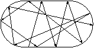
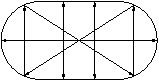
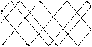
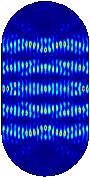
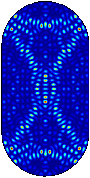
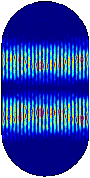
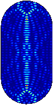
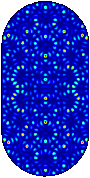

Pär Kurlberg, Matematik
Min forskning är fokuserad på talteori med kopplingar till kvantkaos — ett område vars centrala frågeställning är att förklara sambandet mellan klassiskt kaos och kvantmekanik. I ett kaotiskt system blir små skillnader i begynnelsevillkor snabbt förstärkta, vilket omöjliggör förutsägelser långt fram i tiden — ett slående exempel är att vi ej kan utesluta möjligheten att jorden slungas ut ur solsystemet långt innan solen slocknar. Å andra sidan, i kvantmekanikens våglika värld blir partikelbanor “utsmetade” p.g.a. Heisenbergs osäkerhetsrelation, och detta verkar utesluta ett fundamentalt kännetecken för kaos, nämligen den mycket komplicerade bilden av tätt sammanflätade, men likväl divergenta banor. En fundamental, och kanske något filosofisk fråga är således: hur kan makroskopiskt kaos “skapas” i ett universum som i grund och botten är kvantmekanisk? Denna fråga har debatterats livligt, men från perspektivet av matematisk fysik är följande konkretisering central: på vilket vis uttrycker sig klassiskt kaos i form av egenskaper hos det motsvarande kvantmekaniska systemet? Denna frågeställning ger ofta upphov till problem som kan attackeras m.h.a. talteoretiska metoder, och det är inte ovanligt att dessa frågor i sig visar sig mycket intressanta ur en “klassisk” talteoretisk synvinkel.
Ett exempel på ett kaotiskt system är en punktformad boll som rör sig friktionsfritt på ett stadiumformat billiardbord. För nästan alla val av startpunkt och riktning kommer bollen, efter tillräckligt lång tid, att "ha närmat sig alla punkter från alla håll", s.k. ergodisk rörelse. Notera att det finns många slutna banor, t.o.m. kontinuerliga familjer. (Notera även att rektangulär biljard ej är ergodisk — lutningen hos en godtycklig bana är, upp till tecken, konstant.)
  
En kvantmekanisk motsvarighet till ergodicitet är approximativt likformig sannolikhetsfördelning för kvantpartiklar med bestämd energi (stationära tillstånd, dvs egenfunktioner till den kvantiserade Hamiltonianen). Dock, vid numeriska experiment har man funnit "kvantärr" — vissa egenfunktioner verkar koncentrera sig längs slutna banor.
    Sannolikhetsfördelning för några stationära tillstånd - mörk färg svarar mot liten sannolikhet, ljus mot stor, och rött indikerar maximal sannolikhet. De fyra första bilderna indikerar “ärrbildning”, den sista approximativt likformig fördelning.
Finns dessa ärr vid godtyckligt stora energier? För allmänna kaotiska system verkar frågan mycket svår att besvara, men i vissa fall kan talteoretiska metoder användas framgångsrikt — för tidsdiskreta torusavbildningar, s.k. "CAT maps", har vi uteslutit ärrbildildning för desymmetriserade egenfunktioner, ett av de första rigorösa resultaten inom området. Vi har även studerat egenfunktionernas värdefördelning och funnit att den ej är konsistent med vad som förväntas för generiska kaotiska system, nämligen Gaussisk värdefördelning.
Tillämpningar: På lite längre sikt kan forskningsresultat inom kvantkaos få tillämpning inom mikroelektroniken och torde därför vara av intresse för dator och kommunikationsindustrin.
This document was translated from LATEX by HEVEA.